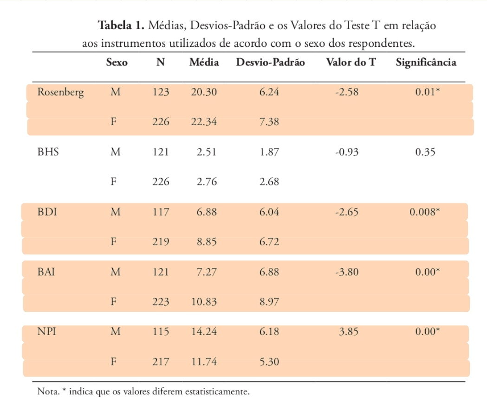
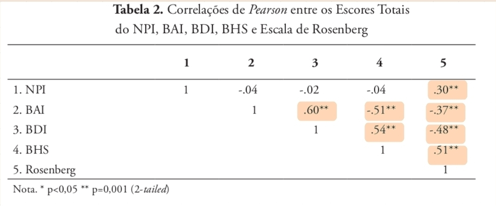

ATIVIDADE AVALIATIVA 4
Universidade Federal Fluminense
13/04/2026
Psicologia Clinica (PUC-Rio), 2014; Ver artigo
| Instrumento | O que mede | Direção do escore |
|---|---|---|
| BAI Inventário de Ansiedade de Beck |
Intensidade da ansiedade | \(\uparrow\) escore = \(\uparrow\) ansiedade |
| BHS Escala de Desesperança de Beck |
Grau de desesperança | \(\uparrow\) escore = \(\uparrow\) desesperança |
| BDI-II Inventário de Depressão de Beck-II |
Intensidade da depressão | \(\uparrow\) escore = \(\uparrow\) depressão |
| Rosenberg Escala de Rosenberg |
Autoestima global | \(\uparrow\) escore = \(\uparrow\) autoestima |
| NPI Inventário de Personalidade Narcisista |
Traços de Narcisismo | \(\uparrow\) escore = \(\uparrow\) narcisismo |
| Variável | Tipo |
|---|---|
| Rosenberg | Quantitativa |
| BAI | Quantitativa |
| BHS | Quantitativa |
| BDI-II | Quantitativa |
| Sexo | Qualitativa binária |
| Curso | Qualitativa nominal |
\[ \begin{cases} H_0: \mu_1 = \mu_2 \\ H_1: \mu_1 \neq \mu_2 \end{cases} \]
\[ \begin{cases} H_0: \mu_1 = \mu_2 = \cdots = \mu_k \quad \text{(todas as médias iguais)}\\ H_1: \exists\, i,j \text{ tal que } \mu_i \neq \mu_j \quad \text{(pelo menos uma média difere)} \end{cases} \]


Homens: com maior narcisismo (NPI; t, p < 0,001);
Mulheres: com maior autoestima(Rosenberg; t, p = 0,01), ansiedade (BAI; t, p < 0,001) e depressão (BDI; t, p = 0,008)
Correlações significativas positivas:
Narcisismo por curso: Maior média em Exatas e menor em Humanas (NPI; F, p < 0,001)
Autoestima por curso: Maior média em Humanas e menor em Exatas (Rosenberg; F, p < 0,001)
Humanas: mais cooperativos; (\(\uparrow\) autoestima; \(\downarrow\) narcisismo)
Exatas: mais competitivos. (\(\downarrow\) autoestima; \(\uparrow\) narcisismo)
Oferece subsídios para a prática clínica no tratamento das “patologias do vazio”;
Auxilia instituições de ensino a identificar grupos que necessitam de suporte psicológico (ex: mulheres e ansiedade);
Fornece dados sobre a subjetividade do jovem brasileiro em relação a padrões globais.